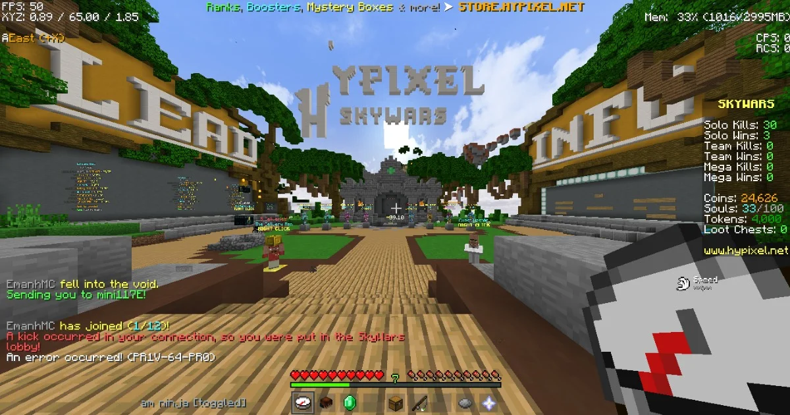

Servers de Minecraft
Minecraft oferece a possibilidade de jogar online em servidores, onde você pode interagir com outros jogadores, construir em conjunto, participar de minigames e muito mais.


Explore diferentes servidores para encontrar a comunidade e os modos de jogo que mais combinam com seu estilo. Seja PvP, sobrevivência ou minigames, há um s